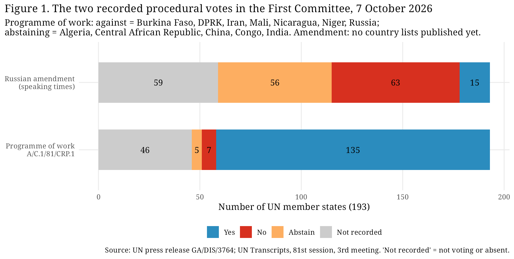
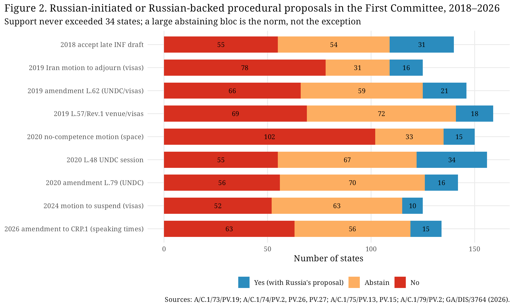
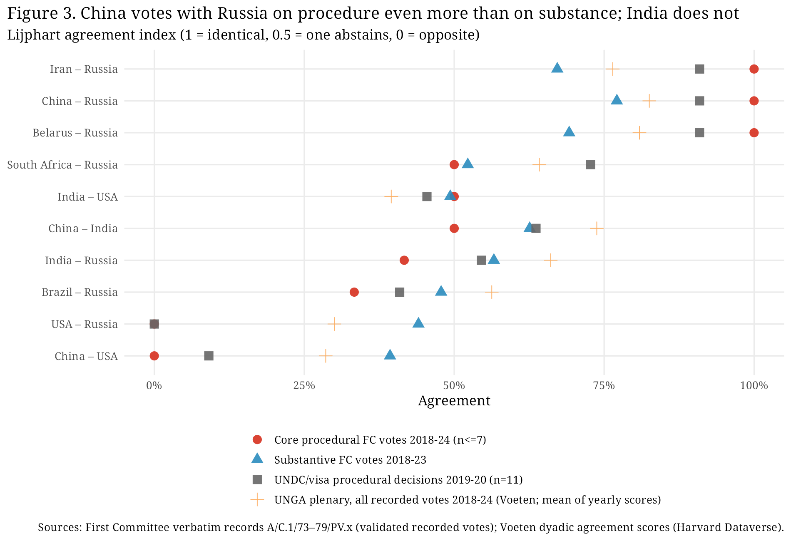
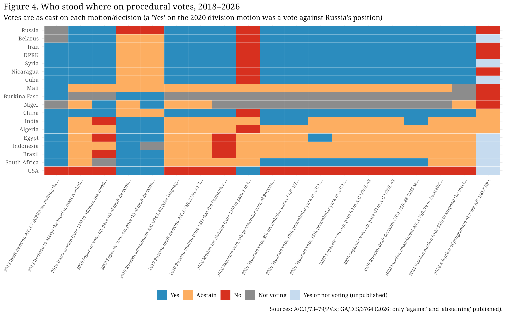
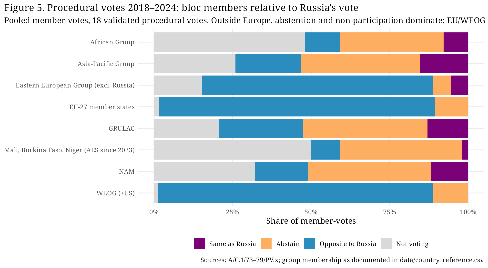
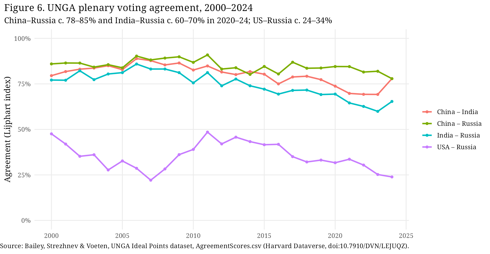
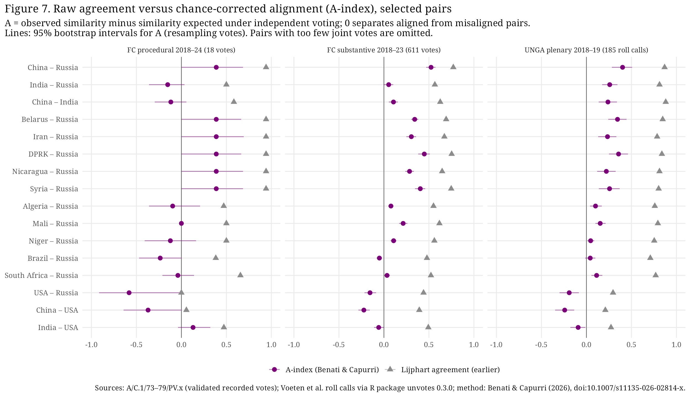
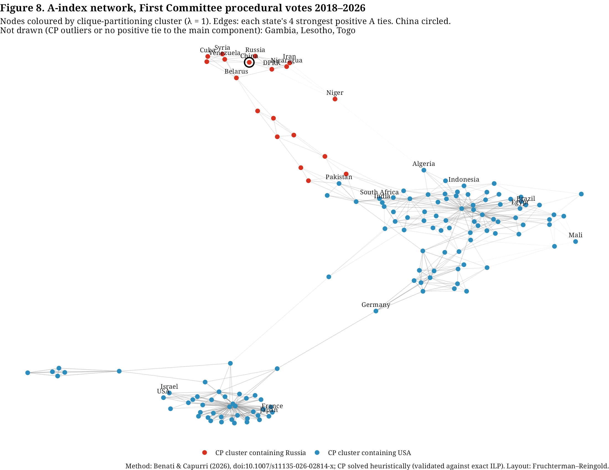
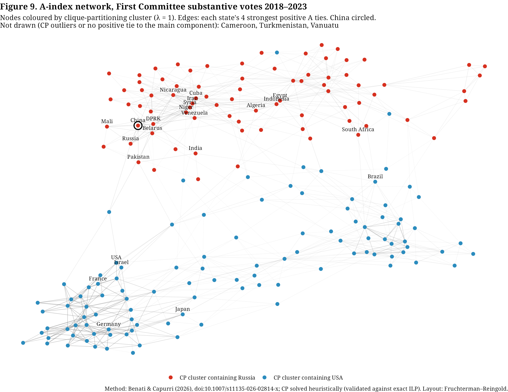
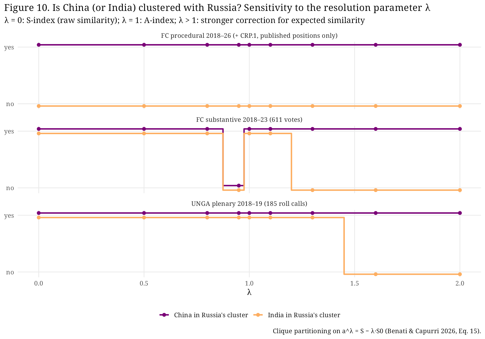

International organizations and voting behavior
When procedure becomes politics: the First Committee's recorded vote on its programme of work
On 7 October 2026 the UN General Assembly's First Committee (Disarmament and International Security) adopted its programme of work by recorded vote after rejecting a Russian amendment on speaking times. Is a vote on such an organizational matter unusual, and what does the pattern of votes reveal about alignment — especially whether China and India behave differently on procedure than on substance?
Key figures: Programme of work A/C.1/81/CRP.1: 135 in favour, 7 against, 5 abstentions. Russian amendment: 15 in favour, 63 against, 56 abstentions (GA/DIS/3764). Programme of work adopted without a vote in every session 2018–2025 in the records checked. China voted with Russia on 8 of 8 Russian-initiated or Russian-backed procedural proposals in 2018–2024, but abstained on 7 October 2026. That abstention is not a first divergence: across all 18 procedural votes from 2018 to 2024, Russia voted against a text drafted by others three times, and China abstained on two of them and voted no once.
Notes on reading the data: votes are as recorded in official verbatim records; a "Yes" on a motion is not support for Russia unless Russia also voted "Yes". Voting together is not evidence of coordination. The European Union is an observer in the Committee and does not vote; "EU" figures below refer to the votes of its 27 member states.
Correction (12 October 2026): This note previously said that China's 2026 abstention was the first time in this series that it did not vote with Russia on a procedural recorded vote. That is wrong. The claim holds only for the 7 or 8 core Russian-initiated procedural votes. Across all 18 procedural votes from 2018 to 2024, Russia voted against a text drafted by others three times: paragraphs (a) and (b) of L.52/Rev.1 (A/C.1/74/PV.26) and the 2020 motion for division (A/C.1/75/PV.14). China abstained on two of them and voted no once. The 2026 abstention therefore repeats China's usual response when Russia opposes a text drafted by others; it is not a first divergence.
1. Context: a dispute over minutes
The First Committee normally settles its timetable without a vote. In 2026 the Bureau's draft (A/C.1/81/CRP.1, 14 September 2026) kept the shorter limits introduced in 2025 under the UN liquidity crisis: 7 minutes for national statements and 10 for groups in the general debate, and 3/4 minutes in the thematic segment. At the organizational meeting on 5 October the Committee failed to approve the programme. Russia argued that the 2025 cuts had been a one-time measure and asked to return to the 8/12-minute practice of the 79th session; it was supported by Iran, the DPRK, Mali, Belarus, China and Burkina Faso, while the United States and some 20 mostly European and Western delegations — joined by Egypt, South Africa, Mexico and Nigeria — backed the draft (GA/DIS/3762). China's delegate proposed that shorter limits apply only to those states that wanted them (UN Transcripts, 1st meeting).
The background matters. At the end of the 2025 session the United States had warned that it "would be prepared to break consensus" if a shortened schedule was not proposed for 2026 (UN Transcripts, 80th session, 26th meeting). On 6 October Russia circulated an amendment; on 7 October the Chair withdrew a compromise proposal, announced that the United States had requested the vote on CRP.1, and put the Russian amendment to a vote first under rule 130 (UN Transcripts, 3rd meeting). The amendment would not have abolished limits: it kept the 3/4-minute "encouraged" limits for the thematic segment but allowed statements up to 5 minutes (7 for groups). It was rejected 15–63–56. The programme of work was then adopted 135–7–5, with Burkina Faso, the DPRK, Iran, Mali, Nicaragua, Niger and Russia against, and Algeria, the Central African Republic, China, Congo and India abstaining (GA/DIS/3764). The Chair did not take explanations of vote, so no delegation explained its vote on the record.
All figures in the brief (135–7–5; 15–63–56; the seven "no" votes; China and India abstaining) are confirmed by the press release and by the Chair's announcements in the UN transcript. The other cited press release, GA/DIS/3766 (9 October), covers the general debate and contains no information on these votes.

2. Data and methods
- 2026. Tallies and the named "against" and "abstaining" states come from GA/DIS/3764; the sequence of events comes from GA/DIS/3762 and the UN Transcripts (automatic speech recognition, which are not official records). Country-level data are not yet complete: the verbatim records A/C.1/81/PV.1–3 were not on the UN Official Document System (ODS) when checked on 10 October 2026, and the 135 states in favour, as well as every state's vote on the amendment, have not been published.
- Baseline. I downloaded every First Committee verbatim record available on ODS for the 73rd–79th sessions (2018–2024; 166 records), plus the first three records of 2015–2017, and parsed all 651 recorded votes. A vote was kept only when the parsed country lists exactly reproduced the official totals (629 votes, 106,647 country-votes). Each procedural or organizational vote was then classified by hand from the record. No ODS verbatim records exist for the 80th session (2025), so 2025 was checked against UN Transcripts.
- Plenary context. Dyadic agreement scores from the Bailey–Strezhnev–Voeten UNGA dataset (Harvard Dataverse).
- Measure. The Lijphart agreement index (1 = same vote, 0.5 = one abstains, 0 = opposite votes; non-voting is excluded), the same construction used in Voeten's dyadic data. Analysis in R Markdown (tidyverse/ggplot2); code and data are in the project folder.
3. Findings
3.1 A recorded vote on the programme of work is new; procedural recorded votes are not
In every session from 2018 to 2025, the programme of work was adopted without a vote, and the organizational meetings of 2015–2017 (PV.1–3) contain no recorded vote either (A/C.1/73/PV.1 to A/C.1/79/PV.1; 2025: UN Transcripts, 80th session, 1st meeting). Other procedural recorded votes, however, do recur. I found 18 validated cases in 2018–2024: 7 core procedural votes (motions to adjourn or suspend, a challenge to competence, a motion for division, acceptance of a late draft, and two organizational draft decisions) and 11 visa-linked votes on decisions about Disarmament Commission sessions in 2019–2020. They cluster around the host-country visa dispute: Iran's 2019 motion to adjourn (A/C.1/74/PV.2), Russia's 2019 draft decision on the Committee's venue (A/C.1/74/PV.27; GA/DIS/3645) and Russia's 2024 motion to suspend (A/C.1/79/PV.2). What is new in 2026 is not procedural contestation but its object: the Committee's own timetable, and a vote requested by the United States, not by Russia.
3.2 Russia's procedural coalition is small and stable
Across eight Russian-initiated or Russian-backed procedural proposals in 2018–2024, support ranged from 10 to 34 states. Every proposal failed, and a large abstaining group, 31 to 72 states, was normal (Figure 2). The 2026 amendment (15 in favour) is typical. Eight states, Russia, Belarus, China, Cuba, the DPRK, Iran, Nicaragua and Syria, voted "yes" on all eight proposals.

3.3 China is closer to Russia on procedure than on substance; India is not
The brief's starting observation, that China and India abstained rather than join Russia, is correct, but the baseline changes how it should be read (Figure 3). On core procedural votes in 2018–2024, China voted exactly as Russia did every time (6 of 6; agreement 1.00). On the visa-linked Disarmament Commission votes its agreement with Russia was 0.91. On substantive First Committee votes (n = 590) it was 0.77, and in all UNGA plenary votes (Voeten, 2018–2024 average) 0.83. India's agreement with Russia was 0.42 on core procedural votes, 0.55 on Disarmament Commission votes, 0.57 on substantive Committee votes and 0.66 in plenary. India abstained on six of the eight Russian proposals. India's 2026 abstention therefore matches its baseline. China's match with Russia held on the 7 or 8 core Russian-initiated procedural votes, not across the full series of 18. Across all 18 procedural votes from 2018 to 2024, Russia voted against a text drafted by others three times — paragraphs (a) and (b) of L.52/Rev.1 (A/C.1/74/PV.26) and the 2020 motion for division (A/C.1/75/PV.14). China abstained on two of them and voted no once. In 2026 Russia again voted against a text drafted by others, and China again abstained (Figure 4).
Two cautions. First, the comparison is not like with like: earlier Russian-initiated votes asked states to support a Russian motion, while the 2026 vote asked them to oppose the whole programme of work, which is the costlier choice. China's vote on the amendment, which is the closer analogue, is not yet known. Second, there are only six core procedural observations, so the 2026 vote cannot be statistically distinguished from the standing pattern already visible when Russia opposed others' texts.


3.4 Coalitions: Sahel realignment, absent "regulars", a stable abstaining centre
- Sahel states (AES). In 2018–2024 Mali abstained on seven of the eight Russian proposals, Burkina Faso did not vote on any of them, and Niger mostly abstained. In 2026 all three voted against the programme of work alongside Russia. This is the clearest change in behaviour in the data. It is consistent with the political realignment of these governments since 2023, but identical votes alone do not show coordination.
- Regulars missing from the "no" list. Belarus, Cuba and Syria, all 8/8 supporters before 2026, are not among the seven states against or the five abstaining, so they voted in favour or did not vote. Belarus spoke for Russia's position on 5 October. Syria's change of government in December 2024 is a plausible explanation in its case. The verbatim record will settle the question.
- The abstaining centre. Algeria abstained on all eight earlier Russian proposals and abstained again in 2026. The Central African Republic and Congo had almost never voted on these proposals. On pooled procedural votes, members of the African Group most often did not vote (48% of member-votes), and NAM members abstained in 39% of member-votes and did not vote in 32% (Figure 5).
- EU member states. Across all procedural member-votes, 87.9% were cast against Russia's position and none with it. Cohesion is high but not perfect: on core procedural votes, an average of 95% of EU member states voted with the EU majority, and all voted alike on 4 of 7. In 2018, for example, 14 abstained, 5 voted yes and 8 did not vote on CRP.3. In 2026 no EU member state was among the states against or abstaining. These are votes of member states, not of the EU, and their similarity is not proof of formal EU coordination.

3.5 Plenary context
China–Russia agreement in the plenary has stayed high, around 0.78–0.85 in 2020–2024, while India–Russia agreement fell from 0.69 (2020) to 0.60 (2023) and was 0.65 in 2024 (Figure 6). Against this baseline, a single Chinese abstention does not indicate a broad China–Russia divergence.

4. Interpretation and implications
The 2026 vote is better read as a contest over who bears the cost of efficiency than as a referendum on Russia. The reform camp, the United States and most Western and European states, treated shorter speaking times as a budgetary necessity and was willing to end consensus to secure them. Russia's camp framed the limits as a restriction on states' sovereign right to be heard. China supported Russia's argument but, when the choice was to reject the whole programme, did not vote against it. That choice matches a standing pattern: China has backed Russia's own initiatives (yes on all eight) but has not, as a rule, joined Russia in opposing texts drafted by others. For theories of UN alignment, procedural solidarity has limits that depend on the object of the vote — a standing pattern rather than a new 2026 limit. Supporting a Russian motion costs little; voting against another state's text, or against the Committee's ability to start work, does not.
5. Alternative explanations and limitations
- Abstention as a signal. China's abstention could signal sympathy without obstruction, deference to the Chair (Nepal) or to developing-country colleagues, or objection to the fact of a vote rather than to its content. Without explanations of vote, these readings cannot be distinguished.
- Procedural salience. Speaking-time limits matter differently to large delegations and to small ones (Senegal raised the burden on small delegations). Votes may reflect delegation capacity rather than geopolitics.
- Small N and coverage. There are 6–7 core procedural observations. Session 79 action-phase records and all session 80 verbatim records are missing from ODS. 22 of 651 parsed votes failed validation and were excluded (all substantive).
- Unpublished 2026 data. The 15 states that supported the amendment are unknown, so the most informative comparison is not yet possible.
- Correlation, not causation, and voting together is not coordination.
6. Conclusion
A recorded vote on the First Committee's own programme of work had not occurred in any session from 2018 to 2025. Procedural contestation itself is recurrent and follows a stable pattern: a Russian-led bloc of 10–34 states, a large abstaining centre and a cohesive Western "no". The 2026 vote shows two clear departures from that pattern: the Sahel states voted with Russia, and several of Russia's usual supporters were absent from the "no" list. China's abstention, like India's, matches a baseline: China voted with Russia on the eight Russian-initiated proposals, but when Russia opposed a text drafted by others it had already abstained twice and voted no once. Whether the 2026 vote is a relative step back from the inner core will be clearer when A/C.1/81/PV.3 and the amendment's country list are published.
Update (12 October 2026): Re-estimating alignment with the Alignment index
The analysis above compared raw agreement scores (the Lijphart index). Does the picture change when co-voting is corrected for chance? This update uses the Alignment (A) index of Benati & Capurri (2026). It asks whether China's abstention on the 2026 programme of work is still a departure from its past behaviour, and whether China is a bridge or a peripheral member in the alignment network.
Key figures. China–Russia, Lijphart agreement → A-index: Procedural votes, 2018–24: 0.94 → 0.39 (95% interval 0.00–0.69). Substantive First Committee votes: 0.77 → 0.52 (0.47–0.57). Plenary, 2018–19: 0.87 → 0.40. India–Russia on procedural votes: 0.50 → −0.15. After the 2026 vote is added, China–Russia A rises to 0.43, while Iran, the DPRK and Nicaragua rise to 0.52. In every partition, China sits in Russia's cluster, as a core member rather than a bridge.
Notes on reading the data: A > 0 means two states vote alike more often than their own voting habits would produce by chance; A < 0 means less often. A is not evidence of coordination. The 2026 vote enters only for the 12 states whose positions are published (GA/DIS/3764). "EU" figures are the votes of the 27 member states.
Why correct for chance?
In the General Assembly most texts pass by large majorities, so two states often vote "yes" together by inertia. Raw similarity measures therefore overstate alignment. Benati & Capurri build on the S-index of Signorino & Ritter (1999). The S-index codes Yes = 1, Abstain = 2 and No = 3, and is 1 minus the mean absolute difference between two states' votes. They subtract the S-index that would be expected if the two states voted independently given their own marginal vote shares. The result, A = S − S⁰, separates aligned (A > 0) from misaligned (A < 0) pairs at zero. The sign of A then feeds a clique-partitioning (CP) model. CP finds the partition that maximises the summed A within clusters. It does not fix the number of blocs in advance and leaves outliers as singletons.
The method thus rewards shared dissent and penalises disagreement where agreement was expected. This matters for procedural votes, where Russia's proposals draw only 10–34 "yes" votes.
Data and methods
- Same data as the 10 October draft. The 18 validated procedural votes of 2018–24 and the 611 validated substantive First Committee votes of 2018–23 (A/C.1/73–79/PV.x via ODS). For 2026 the programme-of-work vote is added, using only the 12 published positions.
- Plenary benchmark. The plenary roll calls for 2018–19 (185 votes) come from the Voeten et al. data as packaged in the R library
unvotes0.3.0. Raw plenary roll calls for 2020–24 could not be retrieved: the Dataverse record now holds only agreement scores, and the UN Digital Library blocks automated access. - Implementation. The equations follow the paper exactly (Eqs. 1, 3–5, 8–12, 15). The code reproduces the paper's worked example (S = 0.208, S⁰ = 0.281, A = −0.073, against the paper's rounded 0.206 / 0.280 / −0.074). Absence is treated as missing; absence-as-abstention is a robustness check. Marginals are estimated on the votes both states cast. The literal Eq. 3 version, using each state's own votes, changes A by at most 0.07 for the pairs reported. The authors' code is not public, so CP is solved by a documented heuristic. It matched the exact integer programme in 30 of 30 test instances. Pairs need at least 8 joint procedural votes or 100 joint substantive votes. Intervals are 95% bootstrap intervals over votes. Analysis is in R Markdown (
alignment_index_update.Rmd).
China is not more aligned with Russia on procedure than on substance
Figure 3 above claimed that China "votes with Russia on procedure even more than on substance". Once chance is corrected, that claim no longer holds. On procedural votes, China and Russia both voted "yes" on 14 of 17 joint votes, so a high similarity was expected anyway (S⁰ = 0.50). Their A is 0.39, with a very wide interval (0.00–0.69). On substantive votes A is 0.52 (0.47–0.57). China is Russia's single most aligned partner on substantive votes (rank 1 of 190) and in plenary 2018–19 (rank 1 of 192). On procedure it is tied with Belarus, Cuba, the DPRK, Iran, Nicaragua and Syria behind Venezuela (Figure 7). China's procedural alignment with Russia is therefore not distinguishable from its substantive alignment.
India's picture sharpens rather than changes:
- Procedure: India is mildly misaligned with Russia (A = −0.15) and mildly aligned with the United States (+0.13).
- First Committee substance: India is essentially independent of Russia (0.05).
- Plenary 2018–19: India is positively aligned with Russia (0.26, rank 6).

China's 2026 abstention: a repeated pattern, not a break
The 10 October draft called China's abstention "the first time in this series that it did not vote with Russia on a procedural recorded vote". That was too strong and needs correcting. It holds only for the 7 core procedural votes. Across all 18 procedural votes, Russia voted against a text three times: the separate votes on paragraphs (a) and (b) of draft decision L.52/Rev.1 on the 2020 Disarmament Commission (A/C.1/74/PV.26); the 2020 motion for division (A/C.1/75/PV.14). China abstained twice and voted no once. In 2026, Russia again voted against a text drafted by others, and China again abstained, which is its most frequent response in that situation. China said "yes" to all eight Russian-initiated proposals. Its rule therefore appears to be to back Russia's own initiatives but not, as a rule, to join Russia in opposing others' texts.
The A-index agrees. After the 2026 vote is added, China–Russia A rises from 0.39 to 0.43. Abstaining while Russia votes no still counts as shared distance from the majority, and it makes China's vote mix more varied, which lowers the expected similarity (S⁰ falls from 0.50 to 0.40). What does change is China's rank. The three states that voted "no" with Russia (Iran, the DPRK, Nicaragua) rise to 0.52, so China drops from joint second to fourth among Russia's procedural partners. The 2026 vote is therefore a relative step back from the inner core, not a misalignment.
Blocs: a small Russian procedural cluster; a weak non-Western cluster on substance
- Procedure (2018–26). Clique partitioning finds two blocs (k* = 2) and leaves Gambia, Lesotho and Togo as outliers. Russia's cluster has 19 states: Angola, Belarus, Burundi, Cambodia, China, Cuba, the DPRK, Iran, Kazakhstan, Kyrgyzstan, Myanmar, Nicaragua, Niger (new with 2026), Russia, Syria, Tajikistan, Venezuela, Zambia and Zimbabwe. Its cohesion (mean A) is 0.30. The second cluster has 126 states, from the United States and the EU to India, Algeria, Brazil, Egypt and South Africa. The 2018–24 partition is identical when absence is coded as abstention.
- Substance (2018–23). A Western cluster of 107 states (cohesion 0.17) faces a cluster of 81 states (cohesion 0.06) that contains Russia, China, India, Algeria, Egypt, Indonesia and South Africa (Figure 9). This reproduces the paper's finding for the UNGA since 1998: a cohesive West and a large but loose alternative bloc. When the resolution parameter is raised (λ ≥ 1.3), India leaves Russia's cluster but China does not (Figure 10).
- EU member states are the most cohesive group: mean within-group A is 0.55 on procedure, 0.64 on substance and 0.66 in plenary. Their mean A with Russia is −0.55 on procedure but about zero (+0.01) on substantive First Committee votes. So the confrontation is much sharper over procedure than over disarmament substance.
- The NAM is not a voting bloc in A terms. Its cohesion is 0.03–0.15.
- The Sahel shift cannot be measured against a baseline. Mali always abstained on procedural votes, so its A with everyone is exactly 0 (no information), and Burkina Faso never voted. The earlier descriptive finding that the AES moved to "no" in 2026 stands. The A-index cannot say how far they moved.


Bridge or periphery? China is core
China has no bridging role in any network:
- Procedure: betweenness is zero and participation across clusters is low (0.11).
- Substance: participation is 0.13, around the 41st percentile.
It is not peripheral either: its mean A with its own cluster is close to the median on procedure (55th percentile) and above it on substance (62nd). The bridging positions belong to others: India, South Africa and Brazil on substance (participation 0.44–0.49, the 86th–93rd percentiles); Pakistan on procedure; Russia itself on substance (highest betweenness). This is consistent with the paper's observation that Russia sometimes votes with Western states on nuclear items. The 2026 abstention leaves China's position essentially unchanged.

Implications and limitations
The correction strengthens the comparison with India and the description of a small, stable Russian procedural coalition. It weakens the claim that 2026 marks a Chinese departure. China's procedural behaviour looks rule-bound: it supports Russia's motions and does not join Russia's "no" against others' texts. The earlier idea that "procedural solidarity has limits that depend on the object of the vote" survives, but as a standing pattern rather than a new 2026 limit. For research on UN alignment, chance-corrected indices matter most exactly where raw agreement looks most striking: in small, lopsided procedural votes.
- Very small N. With 18–19 procedural votes the intervals are wide; one added vote cannot be statistically distinguished from noise. Some bootstrap lower bounds sit at exactly 0 because resamples with only "yes–yes" votes give A = 0.
- Partial 2026 data. The 135 "yes" votes and all positions on the amendment are unpublished. A hypothetical bound that codes every unnamed state "yes" leaves China–Russia unchanged.
- Choices the paper leaves open. These are the marginals (joint or own votes), the absence treatment and the λ setting. China stays in Russia's cluster for every λ from 0 to 2 on procedure and plenary, and for every λ except 0.95 on substance. India's placement depends on λ.
- Network measures. Participation and betweenness are descriptive additions, not part of the paper. CP is solved heuristically for 145–193 states.
- Plenary coverage. Plenary A covers 2018–19 only.
- Interpretation. A is conditional co-voting, not coordination or causation. Abstentions remain ambiguous signals.
Correcting for chance halves China–Russia "agreement" on procedural votes. It removes the earlier claim that China is closer to Russia on procedure than on substance, and it shows that China's 2026 abstention repeats its usual response when Russia opposes a text drafted by others. In alignment terms, China remains Russia's closest substantive partner and a core member of Russia's procedural cluster. The 2026 vote lowers its rank, not its alignment. India's position, independent of Russia on First Committee substance and mildly against it on procedure, is confirmed. The verbatim record A/C.1/81/PV.3, with the amendment's country list, remains the decisive test.
Sources and reproducibility
Data, code (Python parser, R Markdown) and the rendered HTML are in the project folder data/unga-first-committee-procedural-votes. CSV tables and the R Markdown analysis file (analysis.Rmd) are available for download. To reproduce, run the parser and then render analysis.Rmd. The 12 October 2026 Alignment-index update is in the same folder: render alignment_index_update.Rmd (functions in aindex_functions.R; plenary extract in extract_plenary_unvotes.R).
Data files: Procedural votes 2018–2026 · Pairwise agreement · Bloc voting patterns · Support for Russian proposals · Programme of work votes · R Markdown analysis · Alignment-index update (R Markdown) · A-index functions · Plenary extract
References
- UN Meetings Coverage. "Opening Its General Debate, First Committee Spotlights Growing Nuclear Risk…" GA/DIS/3764, 7 October 2026. https://press.un.org/en/2026/gadis3764.doc.htm
- UN Meetings Coverage. "First Committee Opens Eighty-first Session, Fails to Approve Programme of Work, Holds Revitalization Debate." GA/DIS/3762, 5 October 2026. https://press.un.org/en/2026/gadis3762.doc.htm
- UN Meetings Coverage. GA/DIS/3766, 9 October 2026. https://press.un.org/en/2026/gadis3766.doc.htm
- United Nations. "Provisional programme of work and timetable of the First Committee for 2026." A/C.1/81/CRP.1, 14 September 2026. https://www.un.org/en/ga/first/81/pdf/A_C.1_81_CRP.1.pdf
- UN Transcripts (ASR, not official records). First Committee, 81st session, 1st–3rd meetings, 5–7 October 2026. Meeting 1 · Meeting 2 · Meeting 3
- UN Transcripts. First Committee, 80th session, 1st and 26th meetings, 3 October and 6 November 2025. Meeting 1 · Meeting 26
- United Nations. First Committee verbatim records A/C.1/73/PV.1–32, A/C.1/74/PV.1–27, A/C.1/75/PV.1–16, A/C.1/76/PV.1–19, A/C.1/77/PV.1–33, A/C.1/78/PV.1–31, A/C.1/79/PV.1–4, 9, 10, 12, 34, and A/C.1/70–72/PV.1–3 (via https://documents.un.org)
- Key records: A/C.1/73/PV.19 · A/C.1/74/PV.2 · A/C.1/74/PV.26 · A/C.1/74/PV.27 · A/C.1/75/PV.13 · A/C.1/75/PV.14 · A/C.1/75/PV.15 · A/C.1/79/PV.2
- UN Meetings Coverage. "First Committee Votes to Reject Draft Decision on Relocating Overseas…" GA/DIS/3645, 8 November 2019. https://press.un.org/en/2019/gadis3645.doc.htm
- Bailey, Michael A., Anton Strezhnev, and Erik Voeten. 2017. "Estimating Dynamic State Preferences from United Nations Voting Data." Journal of Conflict Resolution 61(2): 430–456. https://doi.org/10.1177/0022002715595700
- Voeten, Erik, et al. "United Nations General Assembly Ideal Points" (incl. AgreementScores.csv), Harvard Dataverse, version 39. https://doi.org/10.7910/DVN/LEJUQZ
- Lijphart, Arend. 1963. "The Analysis of Bloc Voting in the General Assembly: A Critique and a Proposal." American Political Science Review 57(4): 902–917. https://doi.org/10.2307/1952608
- Benati, Stefano, and Agnese Capurri. 2026. "The Alignment index and its application to voting at the United Nations General Assembly." Quality & Quantity 60: 16075–16107. https://doi.org/10.1007/s11135-026-02814-x
- United Nations. Rules of procedure of the General Assembly (rules 118, 121, 129, 130). https://www.un.org/en/ga/about/ropga/